公测链使用指导¶
上次更新版本 v1.0.7
我们将主要讨论公共测试网，以便每个用户都可以轻松的使用HXIndicator。
为了提高主链的稳定性，可以通过Hcash和有兴趣的社区用户免费试用testnet。在testnet稳定运行一段时间后，主链将正式发布。由于项目的复杂性和链中角色的多样性，我们需要让用户对Hyper Exchange项目有一些基本的了解。请阅读跨链、智能合约和高级部分。
公测链将提供以下功能：
- 基本用户注册、转账功能
- 测试币领取功能
- Citizen 挖矿功能
- 手续费承兑单功能
- 链上资产兑换功能（目前支持HC、BTC、LTC、ETH、ERC20代币）
- 合约功能（链上已有资产兑换合约，IDE开发工具将在稍晚推出）
下载HXIndicator¶
最新版本的HXIndicator可以从官方网站
启动和设置¶
首次打开HXIndicator将显示以下屏幕：

默认路径为：％appdata％\ HXIndicator_test \ chaindata，您可以选择要存储chaindata的路径，确保路径有足够的磁盘空间。
然后单击 Next.
选择 CreateWallet(如果您使用的是先前备份的钱包文件，请选择 ImportWallet).
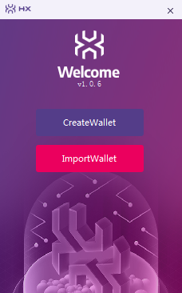
如果选择 ImportWallet,选择一个 wallet.json 文件从本地路径中,加载后输入此钱包的密码，将显示如下：
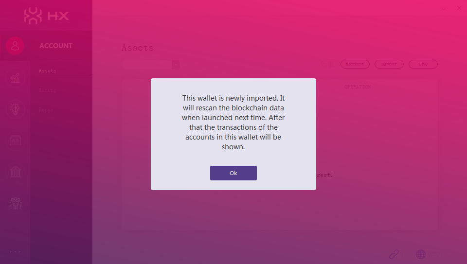
然后点击 Next, LOADING…之后,请设置密码。
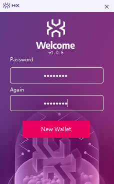
点击 New Wallet,将显示主界面。

在界面的右下角，显示连接数和blcok块号。
在界面的左下角，单击 …后,列出 Setting/Lock/Console/Help
- Setting:设置语言和其他参数：
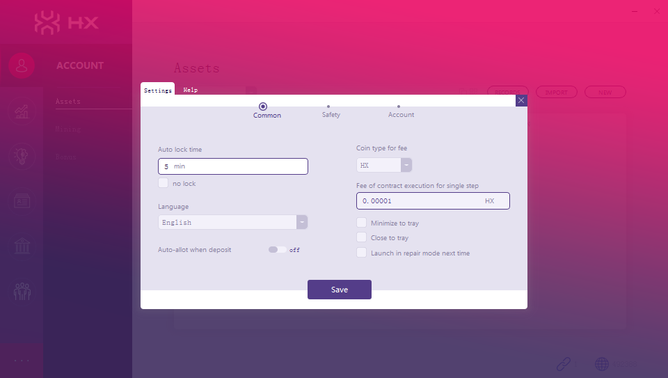
- Setting:更改密码

- Setting:帐户“删除”/“导出”，“备份钱包”：
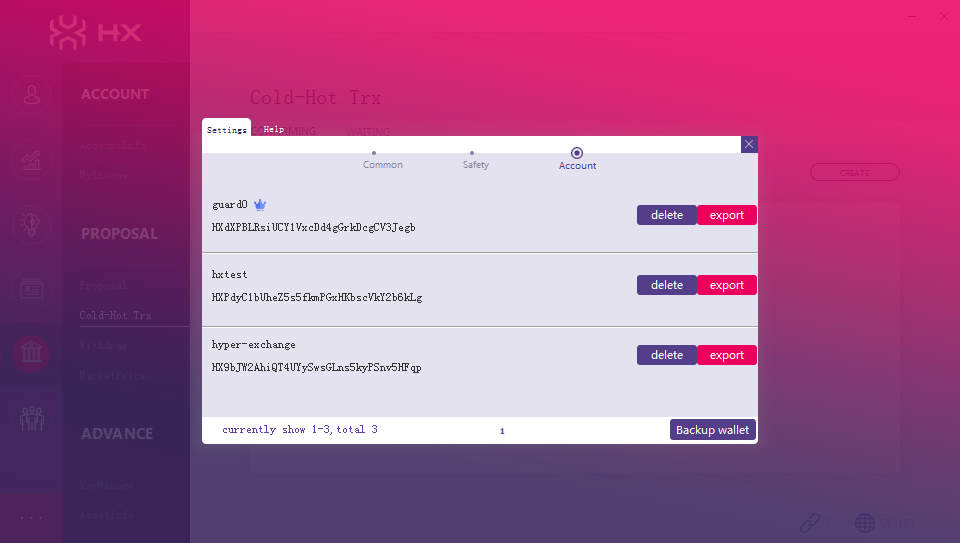
- Lock:点击锁定后，钱包将更改为锁定状态：
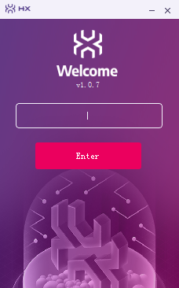
- Console:您可以在此处执行某些命令，例如，执行命令
help将显示您可以调用的所有命令：
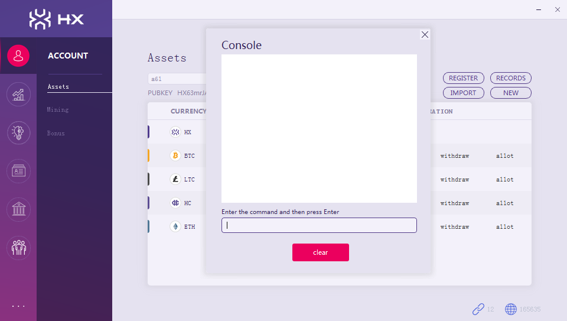
- Help:include About Us/Update
创建一个新帐户¶
点击 “NEW” 在asset page创建一个新的账户, 输入您的帐户名称（它将检查区块链中是否已存在已注册的帐户）。
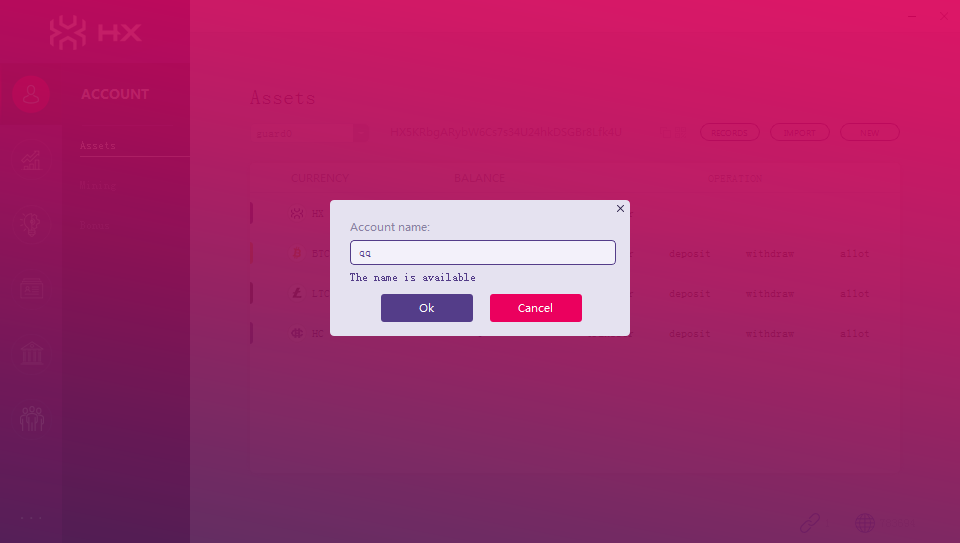
点击 “OK”以备份钱包数据，选择备份路径，然后单击”Backup”.
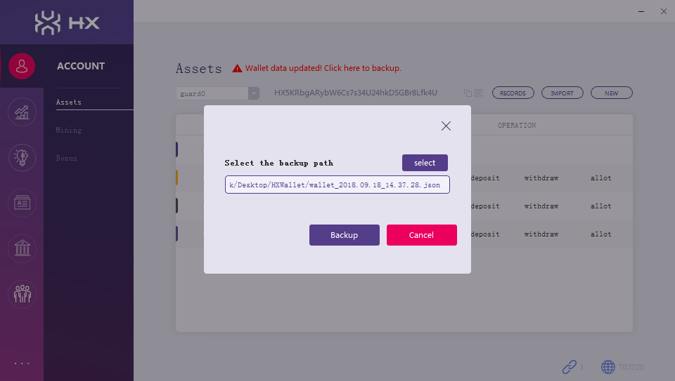
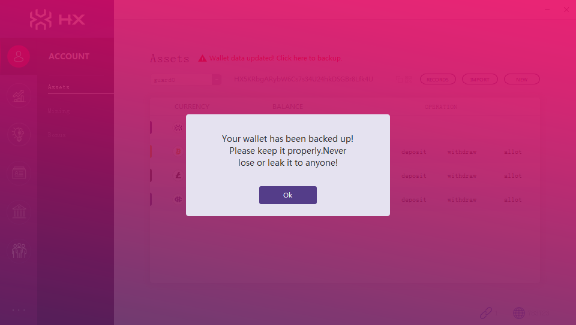
现在您将获得一个HX地址。
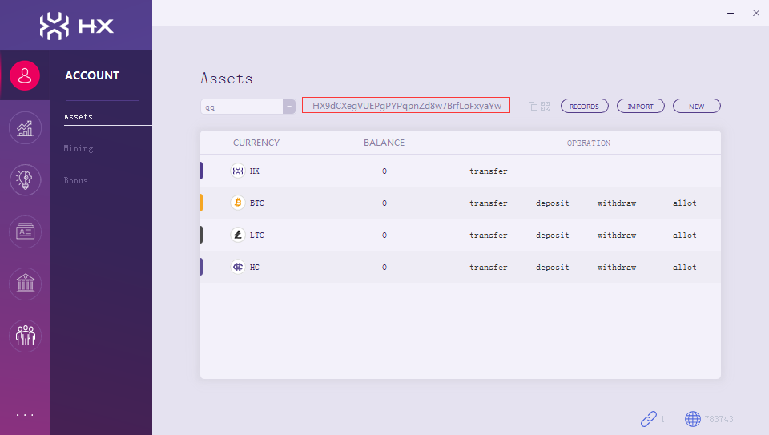
获取测试HX¶
访问水头龙地址:http://facucet.hx.cash, 输入你的hx地址/e-mail/name。
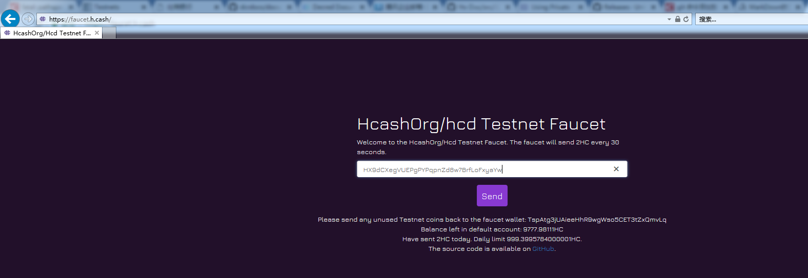
获得其他资产测试币¶
在asset页面点击 deposit 按钮获取其他币的地址,然后访问BTC、LTC的水龙头地址获取测试币.
- BTC水龙头地址:https://testnet.manu.backend.hamburg/faucet
- LTC水龙头地址:http://testnet.litecointools.com
- Hyper Cash水龙头地址：http://faucet.h.cash/
HX测试币将直接到账，可以在Indicator的余额中看到。 其他测试币需要在区块浏览器查看，有6个确认之后在Indicator界面点击“划转”按钮，在弹出的对话框输入划转数量并点击“确定”按钮。再经过6个块的确认将会在“资产”界面的余额中看到。
充值¶
对于HX资产来说，无需充值这个步骤。用户从水龙头领取或者别人通过Indicator转账的HX都可以直接使用。 对于其他HIOU资产来说，如果是在其他钱包里，或者从水龙头领取到的资产，都需要经过充值才能进入HX链。
- 首先可以点击“资产”界面的充值按钮，获取充值地址。
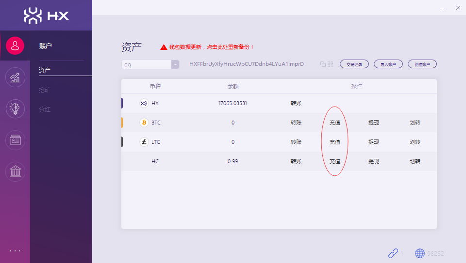
- 用户可以通过转账或水龙头像充值地址充入对应的数字资产。
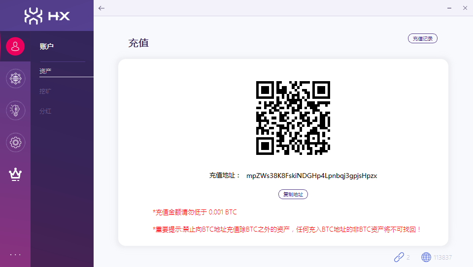
- 充值完成后，等待6个确认块后Indicator中就能看到充入的资产。
转账¶
- 在“资产”界面可以点击各个资产右侧的“转账”按钮进行相同资产之间的转账
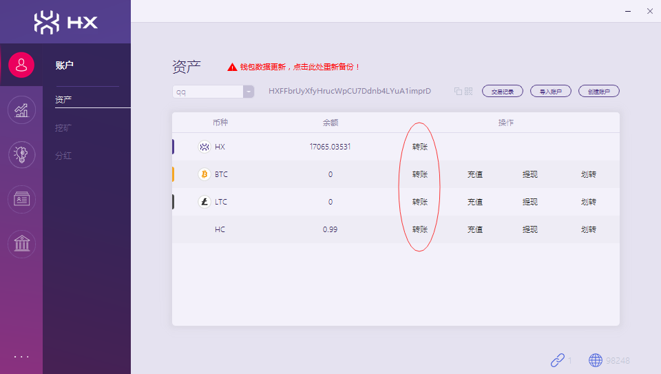
- 在弹出的转账对话框填入目标账户的地址，数量（也可以选择不同的账户和币种），即可进行转账
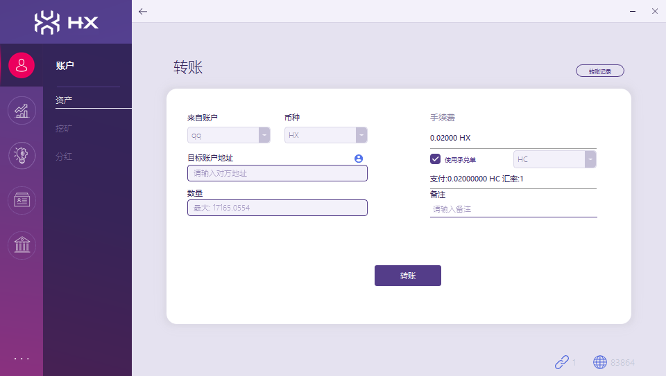
- 转账需要收取一定的HX作为手续费，如果账户中没有HX，可以选择使用承兑单支付手续费。
- 如前面图示，可以使用HC来支付手续费，此时显示要支付的HC数量。
- 如果链上有多个承兑单，钱包会自动选择价格最便宜的。
交易记录¶
交易记录界面可以查询所有账户相关的交易，也提供一些过滤条件方便查询。
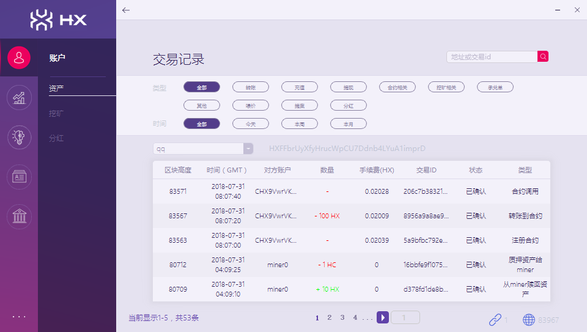
资产兑换¶
在挂单界面可以看到其他用户的挂单，并可以选择合适的卖单进行购买。如果要创建自己的卖单，则需要创建一个挂单合约，Indicator会自动提示花费大约0.02039HX进行注册。
兑换类似一个交易所，只是这个交易所是由智能合约执行的。因此用户兑换资产需要以下几个步骤：
- 充值要兑换的资产到合约（在“我的挂单”界面点击“查看合约余额”，然后点击“充值合约”按钮）
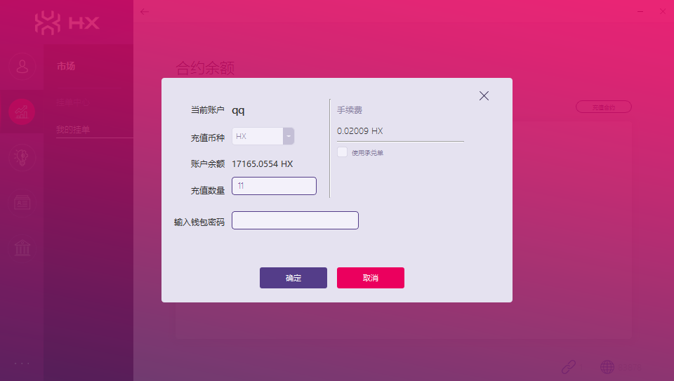
- 设定兑换比例（在“我的挂单”界面点击“挂交易单”按钮）
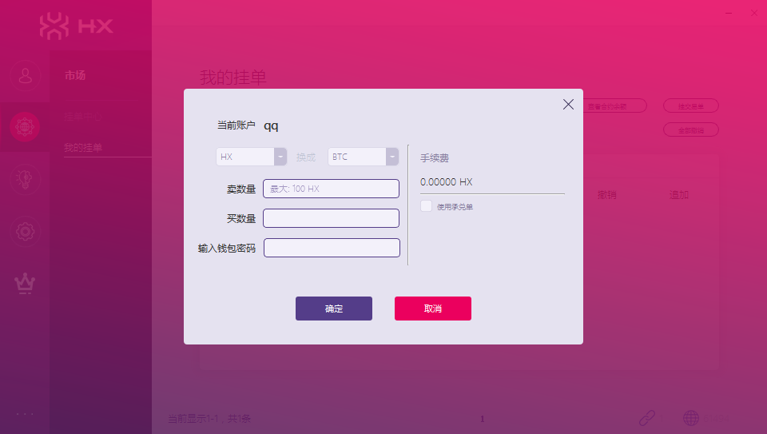
- 在挂单中心可以看到挂单，并且可以选择合适的买入
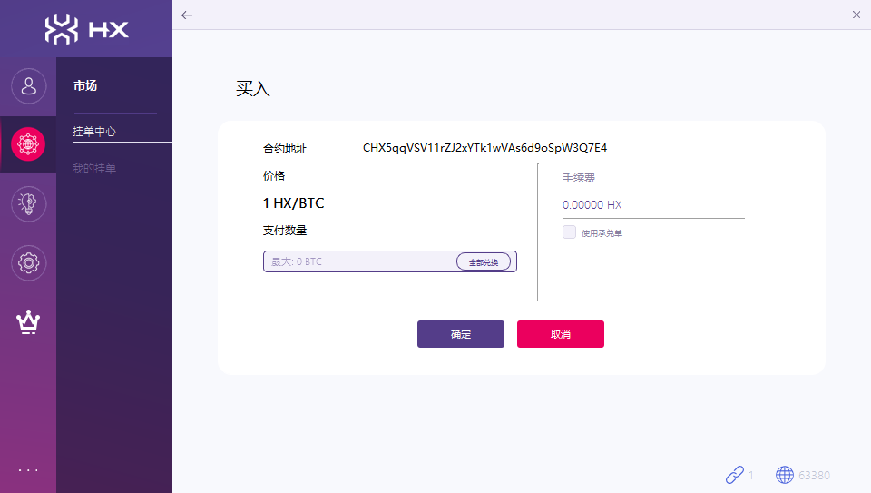
- 提取兑换后的资产（充值到合约以及撤单后没有使用的资产，会显示在合约余额中，用户可以随时提取）
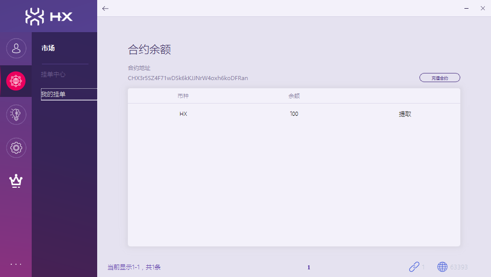
Mining¶
HX的不同于现有的比特币或者其他POS等机制的挖矿。HX可以使用任意的资产来挖矿，获得HX收益。这里成为一个HX矿工很简单，只需要两个步骤：
- 成为注册用户（点击“账户”菜单下“挖矿”子菜单，并在界面上点击“注册”按钮，花费5HX即可注册成功）
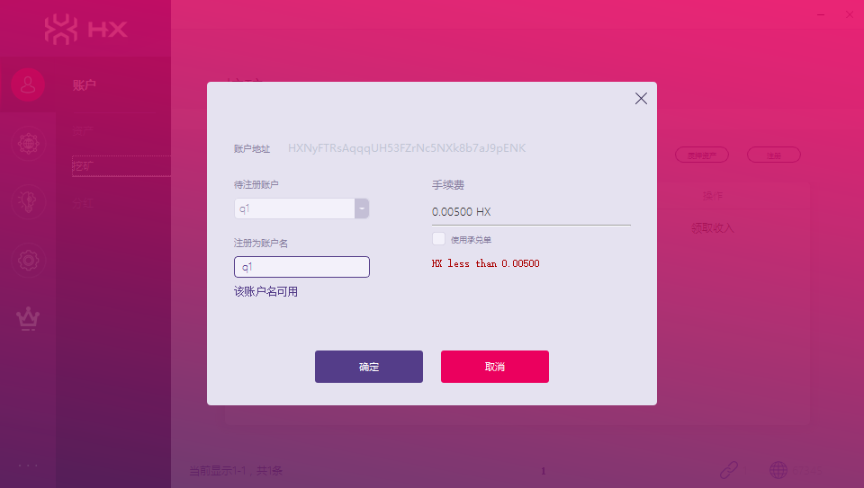
- 选择一种挖矿方式 (1)抵押资产挖矿（在“挖矿”界面点击“质押资产”按钮，选择把自己的资产质押给某个Citizen，此时资产的所有权还是自己的，随时可以撤回）
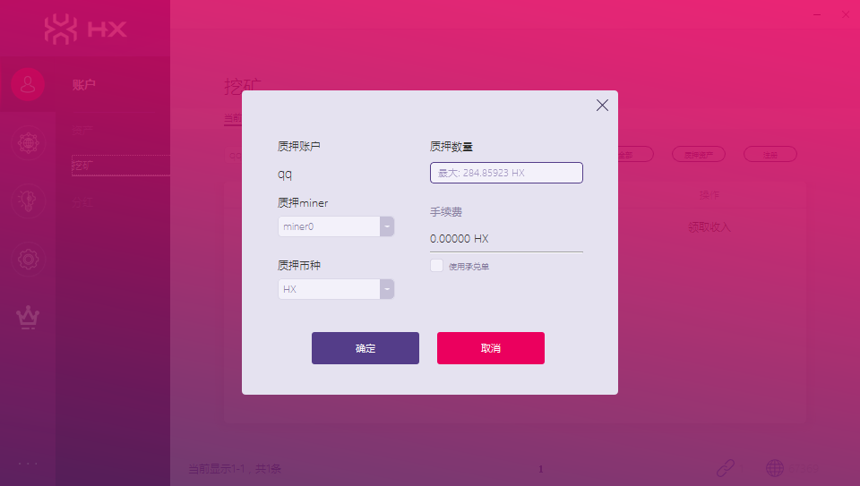
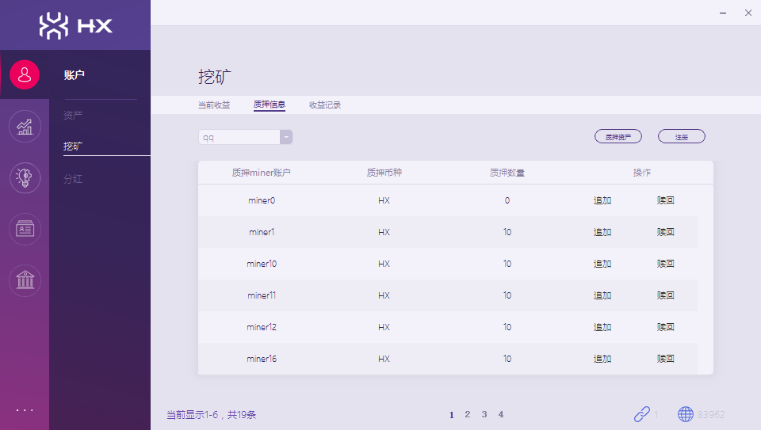
(2)付10000HX成为Citizen（目前钱包暂不支持，后续版本更新将会开放）
质押资产到现有的Citizen跟成为Citizen的区别是，Citizen类似一个矿池，可以抽取一定比例的收益。 当Citizen出块以后，所有质押者包括Citizen将会获得出块收益。如下图所示，用户需要自行领取收入，只有领取后，收益才会进入用户的账户，并可以被使用。
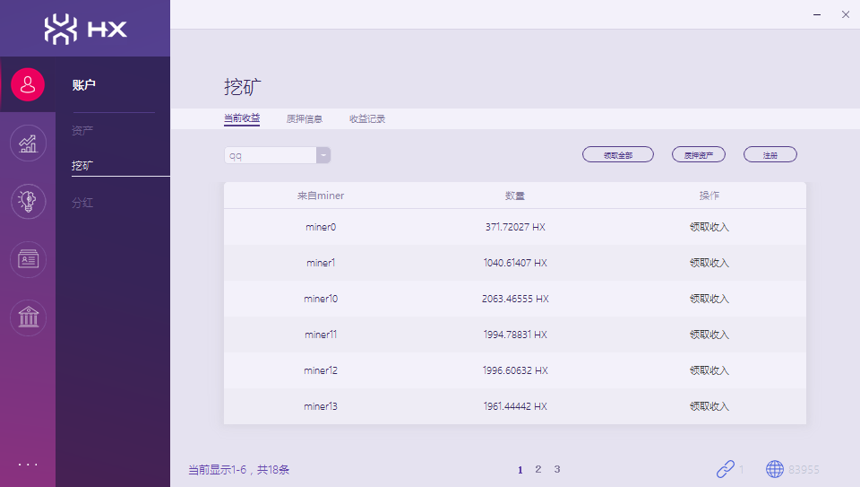